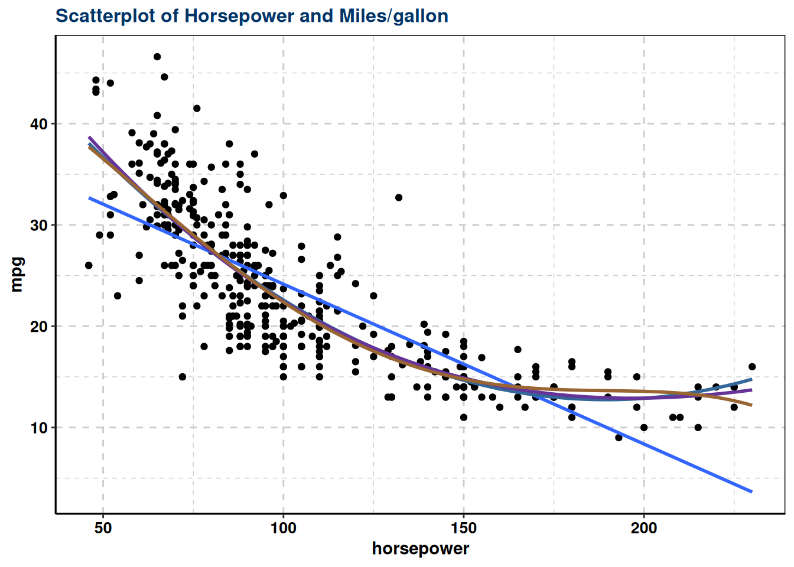
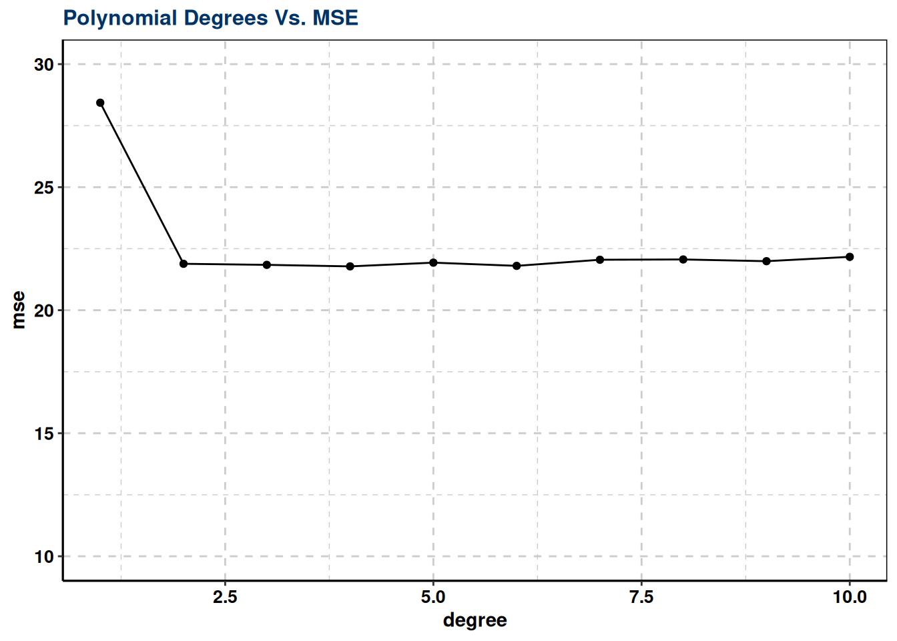
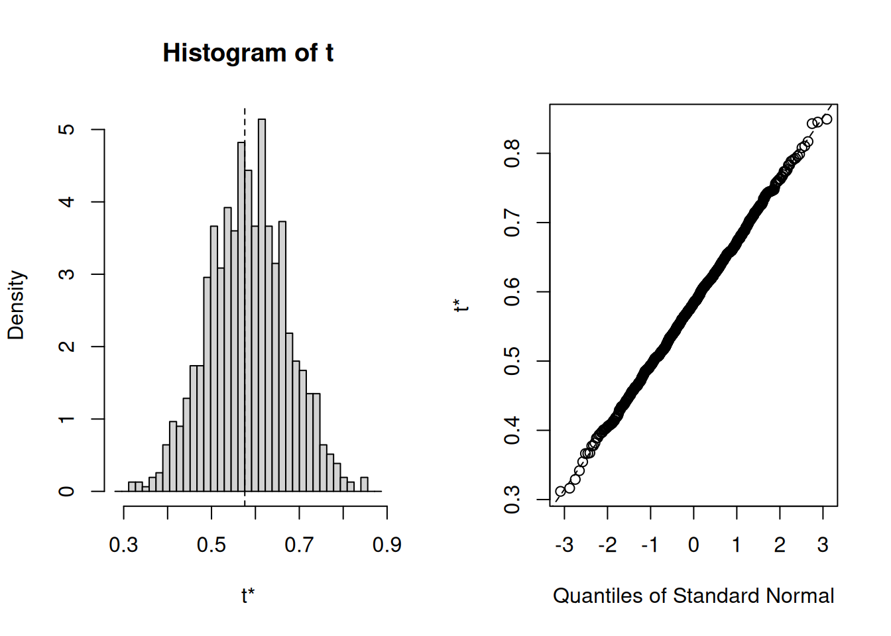

Resampling methods are an indispensable tool in modern statistics. They involve repeatedly drawing samples from a training set and refitting a model of interest on each sample in order to obtain additional information about the fitted model. For example, in order to estimate the variability of a linear regression fit, we can repeatedly draw different samples from the training data, fit a linear regression to each new sample, and then examine the extent to which the resulting fits differ. Such an approach may allow us to obtain information that would not be available from fitting the model only once using the original training sample.
1 tl;dr
This tutorial serves as an introduction to sampling methods and covers1:
This tutorial primarily leverages the Auto data provided by the ISLR package. This is a data set that contains gas mileage, horsepower, and other information for 392 vehicles. We’ll also use tidyverse for some basic data manipulation and visualization. Most importantly, we’ll use the boot package to illustrate resampling methods.
# Packageslibrary(tidyverse) # data manipulation and visualizationlibrary(boot) # resampling and bootstrapping
Attaching package: 'boot'
The following object is masked from 'package:lattice':
melanoma
# Load data auto <-as_tibble(ISLR::Auto)head(auto) %>%kbl() %>%kable_styling(bootstrap_options ="striped", full_width = F, position ="center")
mpg
cylinders
displacement
horsepower
weight
acceleration
year
origin
name
18
8
307
130
3504
12.0
70
1
chevrolet chevelle malibu
15
8
350
165
3693
11.5
70
1
buick skylark 320
18
8
318
150
3436
11.0
70
1
plymouth satellite
16
8
304
150
3433
12.0
70
1
amc rebel sst
17
8
302
140
3449
10.5
70
1
ford torino
15
8
429
198
4341
10.0
70
1
ford galaxie 500
3 Why Resampling
Thus far, in our tutorials we have been using the validation or hold-out approach to estimate the prediction error of our predictive models. This involves randomly dividing the available set of observations into two parts, a training set and a testing set (aka validation set). Our statistical model is fit on the training set, and the fitted model is used to predict the responses for the observations in the validation set. The resulting validation set error rate (typically assessed using MSE in the case of a quantitative response) provides an estimate of the test error rate.
The validation set approach is conceptually simple and is easy to implement. But it has two potential drawbacks:
First, the estimate of the test error rate can be highly variable, depending on precisely which observations are included in the training set and which observations are included in the validation set. I will illustrate on our auto data set. Here we see that there is a relationship between mpg and horsepower and it doesn’t seem linear but we’re not sure which polynomial degree creates the best fit.
ggplot(auto, aes(horsepower, mpg)) +geom_point() +labs(title="Scatterplot of Horsepower and Miles/gallon")+geom_smooth(method ="lm", se =FALSE) +geom_smooth(method ="lm", formula = y ~poly(x, 2), se =FALSE, colour ="#336699") +geom_smooth(method ="lm", formula = y ~poly(x, 3), se =FALSE, colour ="#663399") +geom_smooth(method ="lm", formula = y ~poly(x, 4), se =FALSE, colour ="#996633")+th
`geom_smooth()` using formula = 'y ~ x'

Let’s go ahead and do the traditional validation set approach to split our data into a training and testing set. Then we’ll fit 10 different models ranging from a linear model to a 10th degree polynomial model. The results show us there is a steep decline in our test error (MSE) rate when we go from a linear model to a quadratic model; however, the MSE flatlines beyond that point suggesting that adding more polynomial degrees likely does not improve the model performance.
set.seed(1)sample <-sample(c(TRUE, FALSE), nrow(auto), replace = T, prob =c(0.6,0.4))train <- auto[sample, ]test <- auto[!sample, ]# loop for first ten polynomialmse.df <-tibble(degree =1:10, mse =NA)for(i in1:10) { lm.fit <-lm(mpg ~poly(horsepower, i), data = train) mse.df[i, 2] <-mean((test$mpg -predict(lm.fit, test))^2)}ggplot(mse.df, aes(degree, mse)) +geom_line() +labs(title="Polynomial Degrees Vs. MSE")+geom_point() +ylim(c(10, 30))+th

However, our MSE is dependent on our training and test samples. If we repeat the process of randomly splitting the sample set into two parts, we will get a somewhat different estimate for the test MSE each time. I illustrate below, which displays ten different validation set MSE curves from the auto data set, produced using ten different random splits of the observations into training and validation sets. All ten curves indicate that the model with a quadratic term has a dramatically smaller validation set MSE than the model with only a linear term. Furthermore, all ten curves indicate that there is not much benefit in including cubic or higher-order polynomial terms in the model. But it is worth noting that each of the ten curves results in a different test MSE estimate for each of the ten regression models considered. And there is no consensus among the curves as to which model results in the smallest validation set MSE.
A second concern with the validation approach, only a subset of the observations, those that are included in the training set rather than in the validation set, are used to fit the model. Since statistical methods tend to perform worse when trained on fewer observations, this suggests that the validation set error rate may tend to overestimate the test error rate for the model fit on the entire data set.
We can address these concerns using cross-validation methods.
4 Leave-One-Out Cross-Validation
Leave-one-out cross-validation (LOOCV) is closely related to the validation set approach as it involves splitting the set of observations into two parts. However, instead of creating two subsets of comparable size (i.e. 60% training, 40% validation), a single observation (x_1, y_1) is used for the validation set, and the remaining n-1 observations {(x_2, y_2), \dots, (x_n, y_n)} make up the training set. The statistical learning method is fit on the n − 1 training observations, and a prediction \hat y_1 is made for the excluded observation. Since the validation observation (x_1, y_1) was not used in the fitting process, the estimate error MSE_1 = (y_1 − \hat y_1)^2 provides an approximately unbiased estimate for the test error. But even though MSE_1 is unbiased for the test error, it is a poor estimate because it is highly variable, since it is based upon a single observation (x_1, y_1).
However, we can repeat the procedure by selecting a different row (x_2, y_2) for the validation data, training the statistical learning procedure on the other n-1 observations and computing MSE_2 =(y_2− \hat y_2)^2. We can repeate this approach n times, where each time we holdout a different, single observation to validate on. This produces a total of n squared errors, MSE_1,\dots, MSE_n. The LOOCV estimate for the test MSE is the average of these n test error estimates:
CV_{(n)} = \frac{1}{n}\sum^n_{i=1}MSE_i \tag{1}
To perform this procedure in R we first need to understand an important nuance. In the logistic regression tutorial, we used the glm function to perform logistic regression by passing in the family = "binomial" argument. But if we use glm to fit a model without passing in the family argument, then it performs linear regression, just like the lm function. So, for instance:
glm.fit <-glm(mpg ~ horsepower, data = auto)lm.fit <-lm(mpg ~ horsepower, data = auto)stargazer::stargazer(lm.fit, glm.fit, type='html', summary=TRUE,report ="vc*stp",ci=TRUE)
Dependent variable:
mpg
OLS
normal
(1)
(2)
horsepower
-0.158***
-0.158***
(-0.170, -0.145)
(-0.170, -0.145)
t = -24.489
t = -24.489
p = 0.000
p = 0.000
Constant
39.936***
39.936***
(38.530, 41.342)
(38.530, 41.342)
t = 55.660
t = 55.660
p = 0.000
p = 0.000
Observations
392
392
R2
0.606
Adjusted R2
0.605
Log Likelihood
-1,179.662
Akaike Inf. Crit.
2,363.324
Residual Std. Error
4.906 (df = 390)
F Statistic
599.718*** (df = 1; 390)
Note:
p<0.1; p<0.05; p<0.01
Why is this important? Because we can perform LOOCV for any generalized linear model using glm and the cv.glm function from the boot package. boot provides extensive facilities for bootstrapping and related resampling methods. You can bootstrap a single statistic (e.g. a median), a vector (e.g., regression weights), or as you’ll see in this tutorial perform cross-validation. To perform LOOCV for a given generalized linear model we simply:
fit our model across the entire data set with glm
feed the entire data set and our fitted model into cv.glm
# step 1: fit modelglm.fit <-glm(mpg ~ horsepower, data = auto)# setp 2: perform LOOCV across entire data setloocv.err <-cv.glm(auto, glm.fit)str(loocv.err)
List of 4
$ call : language cv.glm(data = auto, glmfit = glm.fit)
$ K : num 392
$ delta: num [1:2] 24.2 24.2
$ seed : int [1:626] 10403 392 -1703707781 1994959178 434562476 -1277611857 -1105401243 1020654108 526650482 -1538305299 ...
## List of 4## $ call : language cv.glm(data = auto, glmfit = glm.fit)## $ K : num 392## $ delta: num [1:2] 24.2 24.2## $ seed : int [1:626] 403 392 -1703707781 1994959178 434562476 -1277611857 -1105401243 1020654108 526650482 -1538305299 ...
cv.glm provides a list with 4 outputs:
call: the original function call
K: the number of folds used. In our case it is 392 because the LOOCV looped through and pulled out each observation at least once to use a test observation.
delta: the cross-validation estimate of prediction error. The first number, which is the primary number we care about, is the output from Eq. 1 listed above.
seed: the values of the random seed used for the function call
The result we primarily care about is the cross-validation estimate of test error (Eq. 1). Our cross-validation estimate for the test error is approximately 24.2315135. This estimate is a far less biased estimate of the test error compared to our single test MSE produced by a training - testing validation approach.
We can repeat this procedure to estimate an ubiased MSE across multiple model fits. For example, to assess multiple polynomial fits (as we did above) to identify the one that represents the best fit we can integrate this procedure into a function. Here we develop a function that computes the LOOCV MSE based on specified polynomial degree. We then feed this function (via map_dbl) values 1-5 to compute the first through fifth polynomials.
# create function that computes LOOCV MSE based on specified polynomial degreeloocv_error <-function(x) { glm.fit <-glm(mpg ~poly(horsepower, x), data = auto)cv.glm(auto, glm.fit)$delta[1]}# compute LOOCV MSE for polynomial degrees 1-5library(purrr)1:5%>%map_dbl(loocv_error)
Our results illustrate a sharp drop in the estimated test MSE between the linear and quadratic fits, but then no clear improvement from using higher-order polynomials. Thus, our unbiased MSEs suggest that using a 2nd polynomial (quadratic fit) is likely the optimal model balancing interpretation and low test errors.
This LOOCV approach can be used with any kind of predictive modeling. For example we could use it with logistic regression or linear discriminant analysis. Unfortunately, this can be very time consuming approach if n is large, you’re trying to loop through many models (i.e. 1-10 polynomials), and if each individual model is slow to fit. For example, if we wanted to perform this approach on the ggplot2::diamonds data set for a linear regression model, which contains 53,940 observations, the computation time is nearly 30 minutes!
5k-Fold Cross Validation
An alternative to LOOCV is the k-fold cross validation approach. This resampling method involves randomly dividing the data into k groups (aka folds) of approximately equal size. The first fold is treated as a validation set, and the statistical method is fit on the remaining data. The mean squared error, MSE_1, is then computed on the observations in the held-out fold. This procedure is repeated k times; each time, a different group of observations is treated as the validation set. This process results in k estimates of the test error, MSE_1, MSE_2, \dots , MSE_k. Thus, the k-fold CV estimate is computed by averaging these values,
CV_{(k)} = \frac{1}{k}\sum^k_{i=1}MSE_i \tag{2}
It is not hard to see that LOOCV is a special case of k-fold approach in which k is set to equal n. However, using the k-fold approach, one typically uses k = 5 or k = 10. This can substantially reduce the computational burden of LOOCV. Furthermore, there has been sufficient empirical evidence that demonstrates using 5-10 folds yield surprisingly accurate test error rate estimates (see chapter 5 of ISLR for more details2).
We can implement the k-fold approach just as we did with the LOOCV approach. The only difference is incorporating the K = 10 argument that we include in the cv.glm function. Below illustrates our k-fold MSE values for the different polynomial models on our auto data. When compared to the LOOCV outputs we see that the results are nearly identical.
# create function that computes k-fold MSE based on specified polynomial degreekfcv_error <-function(x) { glm.fit <-glm(mpg ~poly(horsepower, x), data = auto)cv.glm(auto, glm.fit, K =10)$delta[1]}# compute k-fold MSE for polynomial degrees 1-51:5%>%map_dbl(kfcv_error)
We can also illustrate the computational advantage of the k-fold approach. As we saw, using LOOCV on the diamonds data set took nearly 30 minutes whereas using the k-fold approach only takes about 4 seconds.
system.time({ diamonds.fit <-glm(price ~ carat + cut + color + clarity, data = diamonds)cv.glm(diamonds, diamonds.fit, K =10)})
user system elapsed
3.368 3.775 2.460
## user system elapsed ## 3.760 0.564 4.347
We can apply this same approach to classification problems as well. For example, in the previous tutorial we compared the performance of a logistic regression, linear discriminant analysis (LDA), and quadratic discriminant analysis (QDA) on some stock market data using the traditional training vs. testing (60%/40%) data splitting approach. We could’ve performed the same assessment using cross validation. In the classification setting, the LOOCV error rate takes the form
CV_{(n)} = \frac{1}{n}\sum^n_{i=1}Err_i \tag{3}
where Err_i = I(y_i \ne \hat y_i). The k-fold CV error rate and validation set error rates are defined analogously.
Consequently, for the logistic regression we use cv.glm to perform a k-fold cross validation. The end result is an estimated CV error rate of .5. (Note: since the response variable is binary we incorporate a new cost function to compute the estimated error rate in Eq. 3)
stock <- ISLR::Smarket# fit logistic regression modelglm.fit <-glm(Direction ~ Lag1 + Lag2, family = binomial, data = stock)# The cost function here correlates to that in Eq. 3cost <-function(r, pi =0) mean(abs(r - pi) >0.5)# compute the k-fold estimated error with our cost functioncv.glm(stock, glm.fit, cost, K =10)$delta[1]
[1] 0.4912
## [1] 0.4984
To performm cross validation with our LDA and QDA models we use a slightly different approach. Both the lda and qda functions have built-in cross validation arguments. Thus, setting CV = TRUE within these functions will result in a LOOCV execution and the class and posterior probabilities are a product of this cross validation.
library(MASS)# fit discriminant analysis models with CV = TRUE for LOOCVlda.fit <-lda(Direction ~ Lag1 + Lag2, CV =TRUE, data = stock)qda.fit <-qda(Direction ~ Lag1 + Lag2, CV =TRUE, data = stock)# compute estimated test error based on cross validationmean(lda.fit$class != stock$Direction)
Thus, the results are similar to what we saw in the previous tutorial, none of these models do an exceptional (or even decent!) job. However, we see that the LOOCV estimated error for the QDA model (.487) is fairly higher than what we saw in the train-test validation approach (.40). This suggests that our previous QDA model with the train-test validation approach may have been a bit optimistically biased!
6 Bootstrapping
Bootstrapping is a widely applicable and extremely powerful statistical tool that can be used to quantify the uncertainty associated with a given estimator or statistical learning method. As a simple example, bootstraping can be used to estimate the standard errors of the coefficients from a linear regression fit. In the case of linear regression, this is not particularly useful, since we saw in the linear regression tutorial that R provides such standard errors automatically. However, the power of the bootstrap lies in the fact that it can be easily applied to a wide range of statistical learning methods, including some for which a measure of variability is otherwise difficult to obtain and is not automatically output by statistical software.
In essence bootstrapping repeatedly draws independent samples from our data set to create bootstrap data sets. This sample is performed with replacement, which means that the same observation can be sampled more than once. The figure below from the ISLR3 book depicts the bootsrap approach on a small data set (n = 3).
Each bootstrap data set (Z^{*1}, Z^{*2}, \dots, Z^{*B}) contains n observations, sampled with replacement from the original data set. Each bootstrap is used to compute the estimated statistic we are interested in (\hat\alpha^*). We can then use all the bootstrapped data sets to compute the standard error of \hat\alpha^{*1}, \hat\alpha^{*2}, \dots, \hat\alpha^{*B} desired statistic as
Thus, SE_B(\hat\alpha) serves as an estimate of the standard error of \hat\alpha estimated from the original data set. Let’s look at how we can implement this in R on a couple of simple examples:
6.1 Example 1: Estimating the accuracy of a single statistic
Performing a bootstrap analysis in R entails two steps:
Create a function that computes the statistic of interest.
Use the boot function from the boot package to perform the boostrapping
In this example we’ll use the ISLR::Portfolio data set. This data set contains the returns for two investment assets (X and Y). Here, our goal is going to be minimizing the risk of investing a fixed sum of money in each asset. Mathematically, we can achieve this by minimizing the variance of our investment using the statistic
Thus, we need to create a function that will compute this test statistic:
statistic <-function(data, index) { x <- data$X[index] y <- data$Y[index] (var(y) -cov(x, y)) / (var(x) +var(y) -2*cov(x, y))}
Now we can compute \hat\alpha for a specified subset of our portfolio data:
portfolio <- ISLR::Portfolio# compute our statistic for all 100 observationsstatistic(portfolio, 1:100)
[1] 0.5758321
## [1] 0.5758321
Next, we can use sample to randomly select 100 observations from the range 1 to 100, with replacement. This is equivalent to constructing a new bootstrap data set and recomputing \hat\alpha based on the new data set.
If you re-ran this function several times you’ll see that you are getting a different output each time. What we want to do is run this many times, record our output each time, and then compute a valid standard error of all the outputs. To do this we can use boot and supply it our original data, the function that computes the test statistic, and the number of bootstrap replicates (R).
The final output shows that using the original data, \hat\alpha = 0.5758, and it also provides the bootstrap estimate of our standard error SE(\hat\alpha) = 0.0875.
Once we generate the bootstrap estimates we can also view the confidence intervals with boot.ci and plot our results:
set.seed(123)result <-boot(portfolio, statistic, R =1000)boot.ci(result, type ="basic")
BOOTSTRAP CONFIDENCE INTERVAL CALCULATIONS
Based on 1000 bootstrap replicates
CALL :
boot.ci(boot.out = result, type = "basic")
Intervals :
Level Basic
95% ( 0.3918, 0.7449 )
Calculations and Intervals on Original Scale
## BOOTSTRAP CONFIDENCE INTERVAL CALCULATIONS## Based on 1000 bootstrap replicates## ## CALL : ## boot.ci(boot.out = result, type = "basic")## ## Intervals : ## Level Basic ## 95% ( 0.3958, 0.7376 ) ## Calculations and Intervals on Original Scaleplot(result)

6.2 Example 2: Estimating the accuracy of a linear regression model
We can use this same concept to assess the variability of the coefficient estimates and predictions from a statistical learning method such as linear regression. For instance, here we’ll assess the variability of the estimates for \beta_0 and \beta_1, the intercept and slope terms for the linear regression model that uses horsepower to predict mpg in our auto data set.
First, we create the function to compute the statistic of interest. We can apply this to our entire data set to get the baseline coefficients.
This indicates that the bootstrap estimate for E(\beta_0) is 0.86, and that the bootstrap estimate for SE(\beta_1) is 0.0076. If we compare these to the standard errors provided by the summary function we see a difference.
model0 <-lm(mpg ~ horsepower, data = auto)stargazer::stargazer(model0, type='html', summary=TRUE,report ="vc*stp",ci=TRUE)
Dependent variable:
mpg
horsepower
-0.158***
(-0.170, -0.145)
t = -24.489
p = 0.000
Constant
39.936***
(38.530, 41.342)
t = 55.660
p = 0.000
Observations
392
R2
0.606
Adjusted R2
0.605
Residual Std. Error
4.906 (df = 390)
F Statistic
599.718*** (df = 1; 390)
Note:
p<0.1; p<0.05; p<0.01
This difference suggests the standard errors provided by summary may be biased. That is, certain assumptions may be violated which is causing the standard errors in the non-bootstrap approach to be different than those in the bootstrap approach.
If you remember from earlier in the tutorial we found that a quadratic fit appeared to be the most appropriate for the relationship between mpg and horsepower. Lets adjust our code to capture this fit and see if we notice a difference with our outputs.
Now if we compare the standard errors between the bootstrap approach and the non-bootstrap approach we see the standard errors align more closely. This better correspondence between the bootstrap estimates and the standard estimates suggest a better model fit. Thus, bootstrapping provides an additional method for assessing the adequacy of our model’s fit.
model1 <-lm(mpg ~poly(horsepower, 2), data = auto)stargazer::stargazer(model1, type='html', summary=TRUE,report ="vc*stp",ci=TRUE)
Dependent variable:
mpg
poly(horsepower, 2)1
-120.138***
(-128.710, -111.565)
t = -27.467
p = 0.000
poly(horsepower, 2)2
44.090***
(35.517, 52.662)
t = 10.080
p = 0.000
Constant
23.446***
(23.013, 23.879)
t = 106.130
p = 0.000
Observations
392
R2
0.688
Adjusted R2
0.686
Residual Std. Error
4.374 (df = 389)
F Statistic
428.018*** (df = 2; 389)
Note:
p<0.1; p<0.05; p<0.01
7 Additional Resources
This will get you started with resampling methods; however, understand that there are many approaches for resampling and even more options within R to implement these approaches. The following resources will help you learn more: